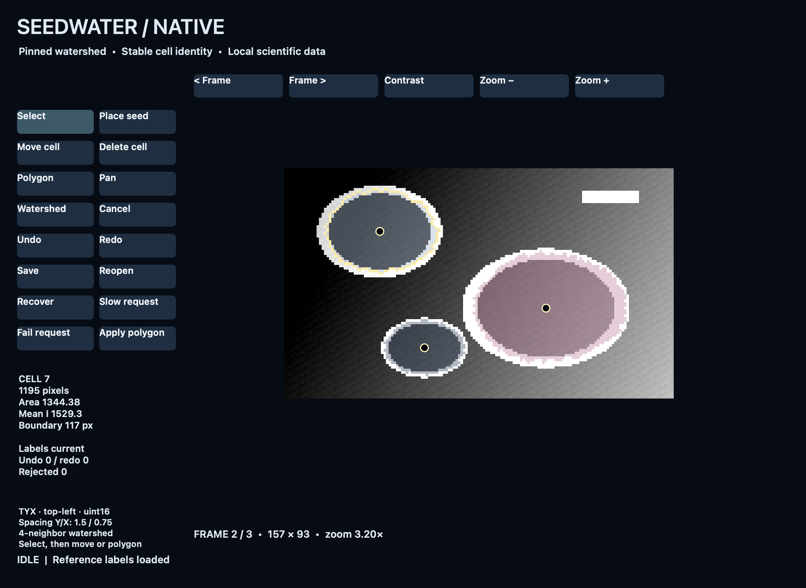
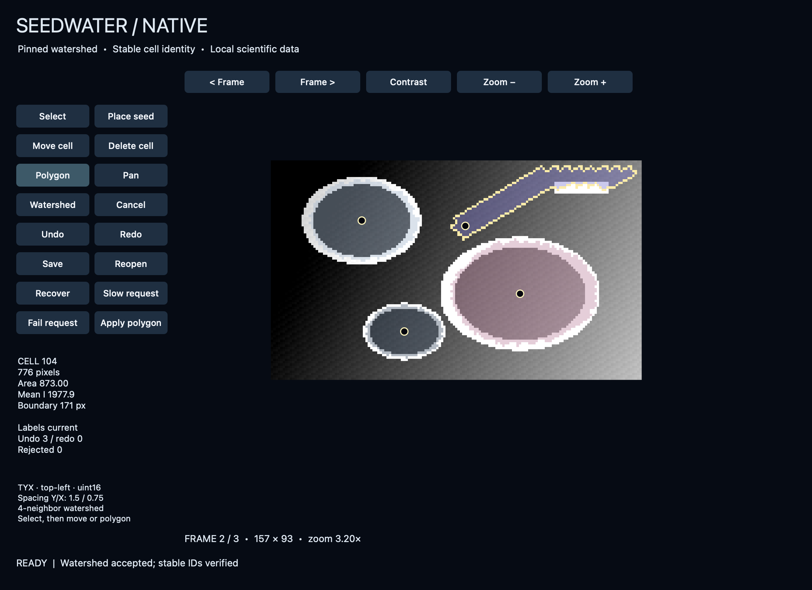
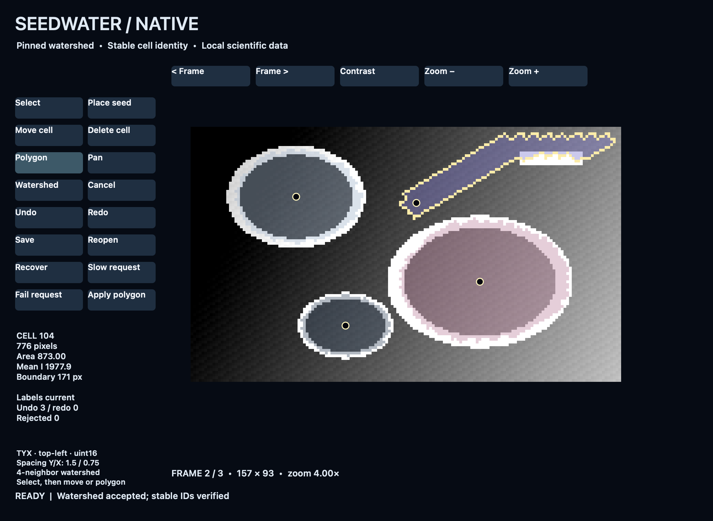

Pinned asymmetric stack / stable cell 7 Action: Open synthetic fixture in native Moxi window Expected: TYX origin, unequal image dimensions, sparse stable IDs and cell boundary agree
initial · offscreen-render · 2080 × 1520 pixels

Frame, contrast, zoom and retained image pan Action: Native frame / contrast / zoom controls; public Camera pan Expected: Frame 2, 3.2× zoom; image and labels stay aligned; no image upload on pan
Redo restores polygon and accepted labels Action: Native Redo Expected: Same stable cell ID and scientific result restored
result · offscreen-render · 2080 × 1520 pixels
Atomic v1 save / reopen Action: Native Save, then Reopen Expected: Arrays, history, cell IDs and axes round-trip; original preserved
result · offscreen-render · 2080 × 1520 pixels
Navigate while a delayed request is pending Action: Slow request, then change frame before completion Expected: Last accepted labels remain visible on each frame
Cancellation terminates and reaps worker Action: Slow request, then Cancel Expected: No pending worker; accepted labels remain
recovery · offscreen-render · 2080 × 1520 pixels
Explicit recovery keeps the corrupt original Action: Harness corrupts main copy; native Reopen rejects it; native Recover, then Save Expected: Verified recovery restores document and history into a new file without overwriting main file
recovery · offscreen-render · 2080 × 1520 pixels

Native resize retains document and ownership Action: AppKit content resize after second-owner rejection and disposal Expected: Remaining window, camera, image and scientific data stay valid
result · offscreen-render · 2200 × 1600 pixels

Close / recreate native owner Action: Dispose native image/window, reject retired token, open fresh owner Expected: Application document survives; retired resource cannot be reused
recovery · offscreen-render · 2080 × 1520 pixels
Contact sheetReproduce
See README.md: run moxi-sws/scripts/evidence.py with explicit MOXI_ROOT, MOJO, MODULAR_HOME, SWS_REFERENCE, SWS_LEGACY_PYTHON
Actual AppKit content-view cacheDisplay captures of a running Moxi native consumer. Scripted native callbacks; offscreen render, excludes compositor/window chrome/physical input. VoiceOver paused.
Screenshots show recorded states. They do not establish latency, scientific accuracy, physical IME, screen-reader behavior, or human usability.